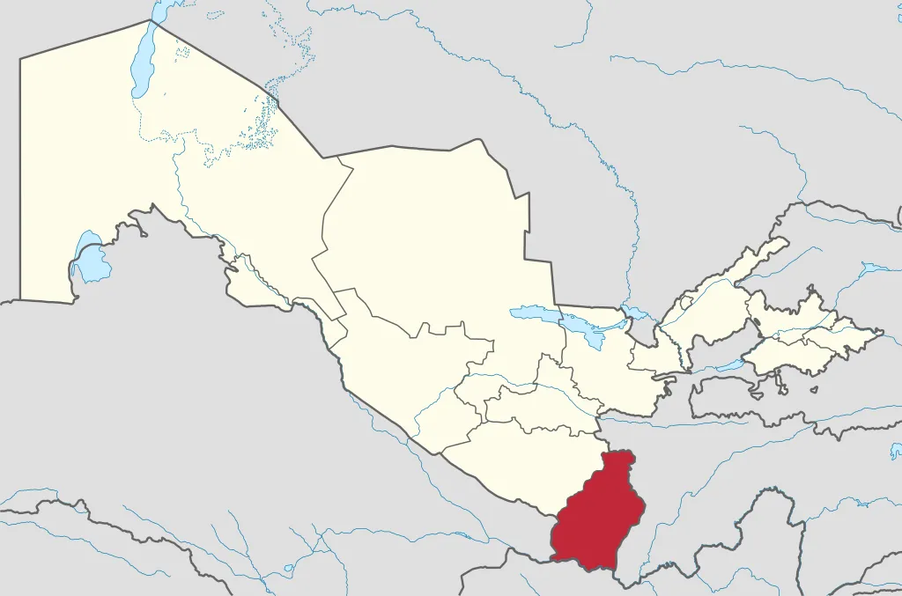

Surxondaryo viloyati
Surxondaryo viloyati - Oʻzbekiston Respublikasi tarkibidagi viloyat. 1941-yil 6 martda tashkil etilgan (1925-yil 29 iyundan Surxondaryo okrugi boʻlgan). 1960-yil 25 yanvarda Qashqadaryo viloyati bilan qoʻshilgan. 1964-yil fevralda qaytadan tashkil qilindi. Respublikaning janubisharqida, Surxon-Sherobod vodiysida joylashgan. Viloyat nomi vohadan oqib o'tuvchi "Surxon" (fors-tojik: "qizil" ) daryosi nomidan kelib chiqqan. Janubidan Amudaryo boʻylab Afgʻoniston, shimoliy, shimoli-sharq va sharqdan Tojikiston, janubi-gʻarbdan Turkmaniston, shim.gʻarbdan Qashqadaryo viloyati bilan chegaradosh. Maydoni 20,1 ming km². Aholisi 2612,4 ming kishi (2019-yil, 1-oktyabr holatiga koʻra). Tarkibida 14 tuman (Angor, Bandixon, Boysun, Denov, Jarqoʻrgʻon, Muzrabot, Oltinsoy, Sariosiyo, Termiz, Uzun, Sherobod, Shoʻrchi, Qiziriq, Qumqoʻrgʻon), 8 shahar (Boysun, Denov, Jarqoʻrgʻon, Termiz, Shargʻun, Sherobod, Shoʻrchi, Qumqoʻrgʻon), 114 ta shaharcha, 865 ta qishloq aholi punktlari mavjud (2019). Markazi — Termiz shahri.
Surxondaryo viloyati relyefi tog va tekisliklardan iborat, shim.dan janubga qiyalanib va kengayib boradi. Togʻlardan oqib tushadigan koʻpdankoʻp daryo va soylar dara hosil qilgan. Surxondaryo va Sheroboddaryo oqib oʻtadigan tekislik shimoliy, gʻarb va sharqdan baland Hisor tizmasi (eng baland joyi 4643 m) va uning tarmoqlari (Boysuntogʻ, Koʻhitangtogʻ, Bobotogʻ) bilan oʻralgan. Yana bir koʻzga koʻringan joylaridan biri Angor tumanidagi Qoraqir qishlogʻidir. Qishloq oʻz polvonlari hamda sabzavotchilik, mevachilik hamda chorvachilikda eng ilgʻor xisoblanadi. Qishloq hamda mahallaning gullab-yashnashiga ulkan xissa qoʻshgan mahalla oqsoqoli Chorshanbiyev Begʻam bobo tumanining koʻzga koʻringan jonkuyarlaridan biridir.
Surxondaryo viloyati sportchilari sportning koʻplab turlari boʻyicha har xil darajadagi musobaqalarda ishtirok etmoqda (kurash, dzyudo, voleybol, futbol, tennis, boks va boshqalar). Surxondaryodan kurash boʻyicha Jahon va Osiyo chempioni, Hakim atTermiziy, Prezident sovrini uchun xalqaro turnirlar gʻolibi Toshtemir Muhammadiyev, xalqaro Hakim atTermiziy turniri gʻoliblari Oʻrol Toʻrayev, Rustam Ergashev, Erali Mamarasulov; bir qancha xalqaro turnirlar gʻolibi, Antaliya musobaqasi jahon chempioni Mahtumquli Mahmudov, dzyudo boʻyicha Osiyo chempioni, kurash boʻyicha xalqaro turnirlar gʻolibi Abdulla Tangriyev kabi mashhur sportchilar yetishib chiqqan. Surxondaryo viloyatida zamonaviy sport inshootlaridan "Kurash saroyi", stadion, "Delfin" suv havzasi, "Alpomish" sport majmui, turli darajadagi xalqaro musobaqalar oʻtkaziladigan tennis korti mavjud. Surxondaryo viloyatida bolalar va oʻsmirlar sport maktabi faoliyat kursatadi (2004).